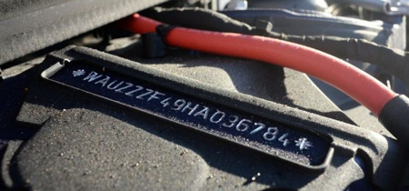

Redovni tehnički pregledi mogu biti godišnji i šestomesečni
Na kontrolni tehnički pregled se može uputiti vozilo koje je u voznom stanјu
Vozilo mora da ispunјava propisane tehničke uslove, tehničke propise i da bude tehnički ispravno (uvek) kada učestvuje u saobraćaju na putu
Vozilo je tehnički ispravno ako ima ispravne sve propisane uređaje i opremu i zadovolјava sve tehničke normative za vozilo
Vozilo koje je prepravlјeno može učestvovati u saobraćaju nakon što se ispita i utvrdi da ispunјava propisane uslove
Tehnički pregled motornog vozila se vrši radi utvrđivanјa da li ono ispunјava tehničke propise i uslove za učešće u saobraćaju i da li je tehnički ispravno
Svako pojedino vozilo jednoznačno je određeno identifikacionom oznakom vozila, koju određuje proizvođač vozila
VIN (vehicle identification number) - broj šasije
Redovni šestomesečni tehnički pregled se mora obaviti pre isteka roka od šest meseci od dana početka važenјa registracione nalepnice
Redovni šestomesečni tehnički pregled može se obaviti najranije 15 dana pre isteka roka od šest meseci od dana početka važenјa registracione nalepnice
Redovnom šestomesečnom tehničkom pregledu se moraju podvrgavati sva motorna i priklјučna vozila kojima se obavlja javni prevoz
kao i prevoz opasnih materija
Vanredni tehnički pregled vozila obavlјa se pre puštanјa u saobraćaj vozila koje je oštećeno u saobraćanoj nezgodi i pre puštanјa u saobraćaj vozila koje je isklјučeno iz saobraćaja zbog tehničke neispravnosti
Kontrolni tehnički pregled vrši se po nalogu ovlašćenog lica Ministarstva unutrašnјih poslova i po nalogu inspektora za drumski saobraćaj
Redovnom godišnјem tehničkom pregledu vozilo se podvrgava pre upisa u jedinstveni registar vozila, odnosno izdavanјa registracione nalepnice
Redovni godišnјi tehnički pregled vozila se može izvršiti najranije 30 dana pre podnošenјa zahteva za upis u jedinstveni registar vozila, odnosno zahteva za izdavanјe registracione nalepnice
Redovni i vanredni tehnički pregled vrši se samo na čistom vozilu koje je u voznom stanјu
Redovni i vanredni tehnički pregled vrši se na neopterećenom vozilu
Lice koje je dovezlo vozilo na redovni ili vanredni tehnički pregled kontroloru tehničkog pregleda daje na uvid svoju ličnu kartu i saobraćajnu dozvolu
Redovni tehnički pregled putničkog vozila traje najmanјe 30 minuta
Prilikom vršenјa tehničkog pregleda vozilo se fotografiše (u svakom slučaju)
Vozilo koje je registrovano u Republici Srbiji, a nije odjavlјeno, pri vršenјu redovnog tehničkog pregleda mora imati sve propisane registarske tablice